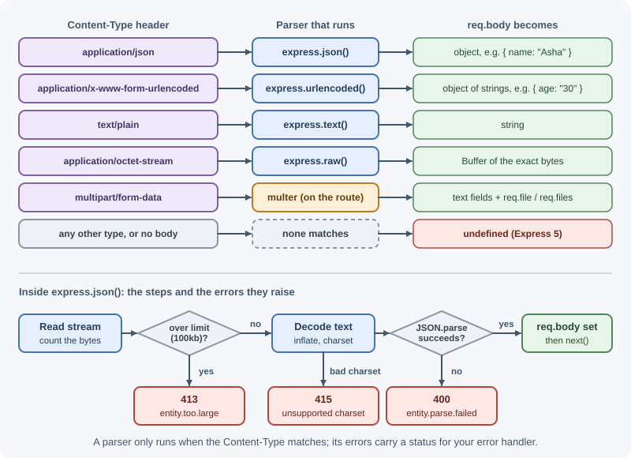
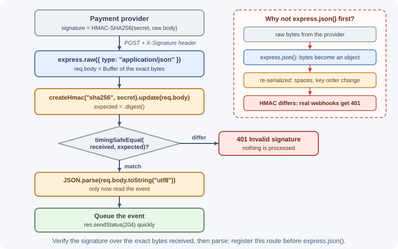

Body Parsing and Content Types¶
A request body arrives as a stream of raw bytes. Before your code can use
it, something must read those bytes, decode them, and turn them into a
JavaScript value. In Express that job belongs to body-parsing
middleware, and the request's Content-Type header tells the parser
which format to expect.
Why it matters¶
If no parser runs, req.body is undefined and handlers fail. If the
wrong parser runs, data is misread. If parsers accept unlimited input, a
client can exhaust memory with one huge request. Webhook providers sign
the exact raw bytes they send, so parsing too early can make signature
verification impossible. Getting body parsing right is a correctness,
reliability, and security concern.
Real-world usage¶
Webhook providers are the clearest real-world reason to understand body parsing: each one signs the exact bytes it sends.
- Stripe requires "the exact UTF-8 string Stripe sent, without any
modifications" for signature checks. Its docs warn that frameworks which
reorder keys or strip whitespace break verification, and that the
webhook route must come before
app.use(express.json())in Express (Stripe documentation). Stripe's own API also "accepts form-encoded request bodies", a reminder thatapplication/x-www-form-urlencodedis not only for HTML forms (Stripe API reference). - GitHub sends an HMAC-SHA256 signature in the
X-Hub-Signature-256header. Its docs say never to compare signatures with a plain==and suggestcrypto.timingSafeEqualfor a constant-time comparison (GitHub documentation). - Slack signs requests in
X-Slack-Signatureand tells developers to "use the raw request body ... before it has been deserialized from JSON or other forms" (Slack documentation). - Shopify puts a base64-encoded HMAC in
X-Shopify-Hmac-SHA256, generated from the app's client secret and the raw request body (Shopify documentation). Providers differ in header names and encodings (hex or base64), so always follow the provider's own instructions.
How it works¶
The Content-Type header¶
The client declares the body's format with Content-Type:
Content-Type |
Body looks like | Typical sender | Express parser |
|---|---|---|---|
application/json |
{"name":"Asha","age":30} |
fetch, mobile apps, API clients |
express.json() |
application/x-www-form-urlencoded |
name=Asha&age=30 |
HTML <form> (default) |
express.urlencoded() |
multipart/form-data |
Parts separated by a boundary; files included | HTML forms with files, FormData |
multer or busboy (not built in) |
text/plain |
hello |
Simple clients, logs | express.text() |
application/octet-stream |
Arbitrary bytes | File uploads, binary APIs | express.raw() |
A parser only runs when the request's Content-Type matches its type
option. A JSON parser ignores a form body, and vice versa.

express.json()¶
app.use(express.json({
limit: "100kb", // default; larger bodies get 413
strict: true, // default; only objects and arrays at the top level
type: "application/json", // which Content-Types to parse
}));
| Option | Default | Meaning |
|---|---|---|
limit |
"100kb" |
Maximum body size; exceeding it produces a 413 error |
strict |
true |
Accept only arrays and objects, not bare values like "hi" or 42 |
type |
"application/json" |
Media types to parse; can be a string, array, or function |
inflate |
true |
Decompress gzip, deflate, or Brotli (br, new in Express 5) request bodies; with false, compressed bodies are rejected with 415 |
reviver |
— | Passed to JSON.parse |
verify |
— | verify(req, res, buf, encoding) called with the raw bytes before parsing |
To accept vendor types such as application/vnd.api+json, pass
type: ["application/json", "application/*+json"].
express.urlencoded()¶
Parses HTML form submissions.
app.use(express.urlencoded({ extended: false, limit: "50kb" }));
extended: false(the Express 5 default) uses Node.js'squerystring:user[name]=Ashastays as the key"user[name]".extended: trueuses theqspackage, which builds nested objects:{ user: { name: "Asha" } }. Express 4 defaulted totrue.parameterLimit(default 1000) caps the number of fields; a body with more fields is rejected with 413 (error typeparameters.too.many).
All values arrive as strings. A checkbox that is unchecked sends nothing at all, so its key is simply missing.
express.text() and express.raw()¶
// Body as a string
app.post("/notes/plain", express.text({ type: "text/plain" }), (req, res) => {
res.json({ length: req.body.length });
});
// Body as a Buffer of the exact bytes received
app.post("/upload/binary", express.raw({ type: "application/octet-stream", limit: "5mb" }),
(req, res) => {
res.json({ bytes: req.body.length });
});
Multipart bodies¶
multipart/form-data is used for file uploads. Express has no built-in
parser for it; use multer (built on busboy). See
file uploads with Multer.
req.body when nothing was parsed¶
In Express 5, req.body is undefined when no parser handled the
request: no parser registered, a different Content-Type, or no body at
all. Express 4 setups often produced {}. Defensive code reads
req.body?.field or validates the whole body with a schema.
Size limits and 413¶
Without a limit, a client could send gigabytes and exhaust memory. The parsers stop reading when the limit is reached and raise an error with status 413 Payload Too Large (also called Content Too Large). Choose limits per route: a login form needs a few kilobytes, while an import endpoint might need megabytes.
Malformed JSON and 400¶
If the body is not valid JSON, express.json() raises an error with
status 400. Without your own error handler, Express's default handler
returns an HTML error page. Handle parser errors in your error middleware
to return JSON:
app.use((err, req, res, next) => {
if (err.type === "entity.parse.failed") {
return res.status(400).json({ error: "Request body is not valid JSON" });
}
if (err.type === "entity.too.large") {
return res.status(413).json({ error: "Request body is too large" });
}
if (err.type === "charset.unsupported" || err.type === "encoding.unsupported") {
return res.status(415).json({ error: "Unsupported body encoding" });
}
next(err); // anything else goes to the general error handler
});
The type values come from body-parser, which powers Express's parsers;
the errors also carry an appropriate status.
Character sets¶
Content-Type: application/json; charset=utf-8 declares the text
encoding. JSON exchanged between systems must be UTF-8, and Express's JSON
parser rejects other charsets, such as latin1, with a 415 error
(charset.unsupported). For text bodies,
express.text({ defaultCharset: "utf-8" }) sets the fallback used when the
request names no charset.
When to use and when not to use¶
| Situation | Use | Avoid |
|---|---|---|
| A JSON API | express.json({ limit }) |
Global parsers with large limits for every route |
| HTML forms, or APIs that accept form encoding | express.urlencoded({ extended: false }) |
extended: true unless you need nested fields |
| Webhooks that must be signature-checked | express.raw({ type: "application/json" }) on that route, or the verify option |
Parsing the body before the check |
| Plain text bodies (logs, CSV snippets) | express.text() |
Reading text through the JSON parser |
| File uploads | Multer (or busboy) on the upload route only | express.json()/express.raw() with huge limits |
| Forwarding a request to another service unchanged | No parser; stream the request through | Parsing and re-serializing, which costs CPU and changes bytes |
Use route-level parsers when routes need different limits or formats. Use one global parser when the whole app is a small JSON API with the same limit everywhere. Do not parse at all for very large or streaming uploads: parsers buffer the whole body in memory before your handler runs.
Practical examples¶
Parsers applied only where they are needed¶
Global parsers run for every request, including ones that never read a body. Route-level parsers keep limits tight and avoid surprises.
const smallJson = express.json({ limit: "10kb" });
const bigJson = express.json({ limit: "2mb" });
app.post("/auth/login", smallJson, login);
app.post("/imports/products", bigJson, importProducts);
Webhook signature verification with the raw body¶
Webhook providers sign the exact bytes they send. If express.json()
parses and re-serializes the body first, whitespace and key order can
change and the signature no longer matches. Keep the raw Buffer for the
webhook route, and register it before any global JSON parser.

import express from "express";
import { createHmac, timingSafeEqual } from "node:crypto";
const app = express();
// 1. Webhook route: raw bytes, registered before express.json()
app.post("/webhooks/payments", express.raw({ type: "application/json" }), (req, res) => {
const received = Buffer.from(req.get("X-Signature") ?? "", "hex");
const expected = createHmac("sha256", process.env.WEBHOOK_SECRET)
.update(req.body) // req.body is a Buffer here
.digest();
// timingSafeEqual needs equal lengths and avoids timing attacks
if (received.length !== expected.length || !timingSafeEqual(received, expected)) {
return res.status(401).json({ error: "Invalid signature" });
}
const event = JSON.parse(req.body.toString("utf8"));
// ...queue the event for processing...
res.sendStatus(204);
});
// 2. Everything else: parsed JSON
app.use(express.json());
An alternative is the verify option, which hands you the raw bytes while
still parsing:
app.use(express.json({
verify: (req, res, buf) => {
if (req.originalUrl.startsWith("/webhooks/")) req.rawBody = buf;
},
}));
The header name and signing scheme differ per provider; follow its documentation. See webhooks.
Supporting both JSON and form submissions¶
app.use(express.json());
app.use(express.urlencoded({ extended: false }));
app.post("/subscribe", (req, res) => {
const email = req.body?.email;
if (typeof email !== "string") {
return res.status(400).json({ error: "email is required" });
}
res.status(201).json({ subscribed: email });
});
curl -X POST localhost:3000/subscribe -H "Content-Type: application/json" \
-d '{"email":"a@example.com"}'
curl -X POST localhost:3000/subscribe -d "email=a@example.com"
# curl -d sends application/x-www-form-urlencoded by default
Requiring a specific content type¶
function requireJson(req, res, next) {
// req.is() returns null when there is no body (GET, most DELETEs), so
// only a body with another Content-Type is rejected
if (req.is("application/json") === false) {
return res.status(415).json({ error: "Content-Type must be application/json" });
}
next();
}
Best practices¶
- Set explicit
limitvalues that match each route's real needs. - Register parsers only for routes that read bodies, especially large limits.
- Handle parser errors (
entity.parse.failed,entity.too.large) and return consistent JSON errors. - Keep the raw body for webhook routes and register them before global JSON parsing.
- Validate
req.bodyafter parsing; parsing proves the syntax is valid, not that the data is correct. See request validation. - Prefer
extended: falseunless you truly need nested form fields. - Reject unexpected content types with 415 for endpoints that accept only one format.
In production¶
- Legitimate imports fail with 413. Symptom: larger uploads or
imports are rejected. Detect: two different sources: Express logs
PayloadTooLargeError: request entity too large, while a 413 HTML page from Nginx never reaches your app at all, because Nginx'sclient_max_body_sizedefaults to1m. Cause: a limit lower than the route needs, at either layer. Fix: raise the limit for that route only, in both Express and the proxy. - Webhook deliveries start failing after a refactor. Symptom: the
provider's dashboard shows failed deliveries and retries. Detect: a
spike in
401 Invalid signatureresponses on the webhook route. Cause: a globalexpress.json()was moved above the webhook route, so the raw bytes are gone. Fix: register the raw webhook route first, and test it with a real signed payload. req.bodyisundefinedfor one client. Symptom: "field is required" errors from a client that is sending the field. Detect: the request log showsContent-Type: text/plain;charset=UTF-8. Cause: a browserfetchwith a string body and noContent-Typeheader is sent astext/plain, whichexpress.json()skips. Fix: the client setsContent-Type: application/json; optionally return 415 for other types.- The frontend cannot read error responses. Symptom: frontend logs
show JSON parse errors such as
Unexpected token '<'. Detect: the error responses haveContent-Type: text/html. Cause: malformed JSON reaches Express's default handler, which answers with an HTML page. Fix: handleentity.parse.failedin your error middleware and answer with JSON. - Latency spikes during large uploads. Symptom: all endpoints slow
down while a few clients send big JSON bodies. Detect: event-loop delay
metrics rise together with request size. Cause:
JSON.parseruns synchronously on the main thread. Fix: keep JSON limits small and move bulk imports to file uploads processed in the background.
Important terminology¶
- Request body: The data sent after the request headers.
Content-Type: The header declaring the body's media type and, optionally, its charset.- Media type (MIME type): A label such as
application/jsondescribing a data format. - Body parser: Middleware that reads the body stream and fills
req.body. - Multipart: A body format that combines several parts, including files, separated by a boundary string.
- Raw body: The exact bytes received, before parsing.
- 413 / 415: Status codes for "body too large" and "unsupported media type".
Common mistakes and misconceptions¶
- Forgetting
express.json()and readingundefinedfromreq.body. - Sending JSON without
Content-Type: application/json, so the parser skips the body. - Expecting
express.json()orexpress.urlencoded()to handle file uploads; multipart needs a separate parser. - Leaving the default HTML error page for malformed JSON in an API.
- Parsing webhook bodies with a global JSON parser and then failing signature checks.
- Assuming form values are numbers or booleans; they are strings.
- Thinking a successful parse means the data is valid.
Revision questions¶
- How does Express decide which body parser handles a request?
- What is the difference between
extended: falseandextended: true? - Why should every parser have a size limit, and what status does exceeding it produce?
- Why does webhook signature verification need the raw body, and how can you keep it?
- What is
req.bodyin Express 5 when no parser ran? - Which parser do you need for
multipart/form-data?